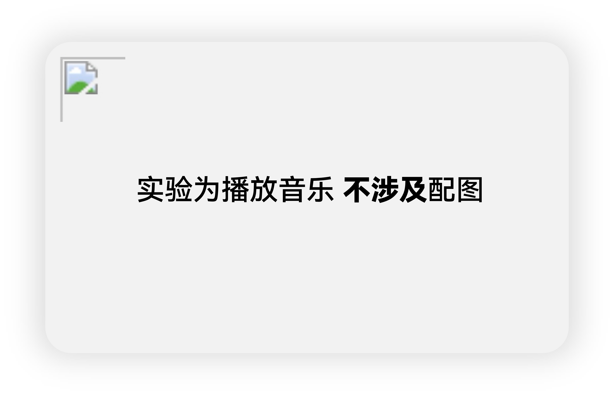

2021211439 张宇琛的实验
实验一 LED灯
说明：此实验可以通过遥控器操作实现LED灯的变化
/*实验一 遥控灯*/
#include < IRremote.h >
#include < liquidCrystal_I2C.h >
int RECV_PIN=10;
int ledPin=3; //LED -digital 3
boolean ledState=LOW; //ledState用来存储LED的状态
IRrecv irrecv(RECV_PIN);
decode_results results;
void setup() {
Serial.begin(9600);
irrecv.enableIRIn();
pinMode(ledPin,OUTPUT); //设置LED为输出状态
}
void loop() {
if(irrecv.decode(&results)){
Serial.println(results.value,HEX);
if(results.value==0xFD00FF){
ledState=!ledState;
digitalWrite(ledPin,ledState);
}
irrecv.resume();
}
}

实验二 点歌台
说明：此实验可以通过计算机输入控制歌曲（我真的想不出来除了助教给的示例以外其他的只有do到xi的音乐了，所以只能用这两个了┭┮﹏┭┮）
/*实验二 点歌台*/
#include < IRremote.h >
#include < liquidCrystal_I2C.h >
#define DO 294
#define RE 330
#define MI 350
#define FA 393
#define SAO 441
#define LA 495
#define XI 556
//歌曲
int Eulogyofjoytune[]= //根据简谱列出各频率
{
MI,MI,FA,SAO,
SAO,FA,MI,RE,
DO,DO,RE,MI,
MI,RE,RE,
MI,MI,FA,SAO,
SAO,FA,MI,RE,
DO,DO,RE,MI,
RE,DO,DO,
RE,RE,MI,DO,
RE,MI,FA,MI,RE,
RE,MI,FA,MI,RE,
DO,RE,DO,MI,
MI,MI,FA,SAO,
SAO,FA,MI,RE,
DO,DO,RE,MI,
MI,RE,RE,
};
int lstune[]={
DO,DO,SAO,SAO,
LA,LA,SAO,
FA,FA,MI,MI,
RE,RE,DO,
SAO,SAO,FA,FA,
MI,MI,RE,
SAO,SAO,FA,FA,
MI,MI,RE,
DO,DO,SAO,SAO,
LA,LA,SAO,
FA,FA,MI,MI,
RE,RE,DO,
};
//自己定义一组频率和节拍
int tune={
};
//节拍
float Eulogyofjoybeat[]= //根据简谱列出各节拍
{
1,1,1,1,
1,1,1,1,
1,1,1,1,
1+0.5,0.5,1+1,
1,1,1,1,
1,1,1,1,
1,1,1,1,
1+0.5,0.5,1+1,
1,1,1,1,
1,0.5,0.5,1,1,
1,0.5,0.5,1,1,
1,1,1,1,
1,1,1,1,
1,1,1,0.5,0.5,
1,1,1,1,
1+0.5,0.5,1+1,
};
float lsbeat[]={
1,1,1,1,
1,1,1+1,
1,1,1,1,
1,1,1+1,
1,1,1,1,
1,1,1+1,
1,1,1,1,
1,1,1+1,
1,1,1,1,
1,1,1+1,
1,1,1,1,
1,1,1+1
};
//自己定义一组频率和节拍
float beat={
};
//设置接口
int buzzerpin=3;
int ledpin=10;
void setup() {
pinMode( buzzerpin,OUTPUT );
pinMode(ledpin,OUTPUT);
Serial.begin(9600);
}
//播放歌曲的函数
void start(int len,int buzzpin,int lepin,int *tune,float *beat){
for(int x=0;x<len;x++)
{
tone(buzzpin,tune[x]);
digitalWrite(lepin, HIGH);
delay(500*beat[x]);//与前一代码不同之处，这里将原来的500分为了400和100，分别控制led的开与关，对于蜂鸣器来说依然是500.
digitalWrite(lepin, LOW);
noTone(buzzpin);
delay(100);
}
}
void loop() {
String select;
while(Serial.available()>0){
select+=char(Serial.read());
delay(2);
}
if(select!=""){
int len;
if(select=="Ode to Jo"){
Serial.println("Next, we will play the Ode to Jo");
len=sizeof(Eulogyofjoytune)/sizeof(Eulogyofjoytune[0]);
start(len,buzzerpin,ledpin,Eulogyofjoytune,Eulogyofjoybeat);
}else if(select=="little star"){
Serial.println("Next, we will play the little star");
len=sizeof(lstune)/sizeof(lstune[0]);
start(len,buzzerpin,ledpin,lstune,lsbeat);
}else{
Serial.println("Sorry, there is no such song in the music library.");
}
}
}

实验三 实时温度检测器
说明：此实验可以检测实时温度（虽然说不准）
#include < wire.h >
#include < LiquidCrystal_I2C.h >
#include < dht11.h >
dht11 DHT;
#define DHT11_PIN
void setup(){
lcd.init(); // LCD初始化设置
lcd.backlight(); // 打开LCD背光
Serial.begin(9600); // 设置串口波特率9600
//串口输出”Type, status, Humidity(%), Temperature(C)”
Serial.println("Type,\tstatus,\tHumidity(%),\tTemperature(C)");
lcd.print("Humidity(%): "); //LCD屏显示” Humidity(%):”
lcd.setCursor(0, 1); //光标移到第2行，第一个字符
lcd.print("Temp(C): "); //LCD屏显示”Temp(C):”
}
void loop() {
int chk; //chk用于存储DHT11传感器的数据
Serial.print("DHT11, \t");
//读取 DHT11传感器的数据
chk = DHT.read(DHT11_PIN);
switch (chk){
case DHTLIB_OK:
Serial.print("OK,\t");
break;
case DHTLIB_ERROR_CHECKSUM:
Serial.print("Checksum error,\t");
break;
case DHTLIB_ERROR_TIMEOUT:
Serial.print("Time out error,\t");
break;
default:
Serial.print("Unknown error,\t");
break;
}
//串口显示温湿度值
Serial.print(DHT.humidity,1);
Serial.print(",\t");
Serial.println(DHT.temperature,1);
//LCD显示温湿度值
lcd.setCursor(12, 0);
lcd.print(DHT.humidity,1);
lcd.setCursor(8, 1);
lcd.print(DHT.temperature,1);
delay(1000);
}

实验四 日历
说明：此实验可以做出电子日历，但是这个时间也不准，会快一些
/*实验四 日历*/
#include < IRremote.h >
#include < liquidCrystal_I2C.h >
liquidCrystal_I2C lcd(0x20,16,2);
int RECV_PIN=10;
int ALARM_PIN=4;
IRrecv irrecv(RECV_PIN);
decode_results results;
int Y1,Y2,Y3,Y4;
int M1,M2;
int D1,D2;
int H1,H2;
int MI1,MI2;
int S1,S2;
int Date;
void setup() {
Serial. begin(9600);
irrecv.enableIRIn();
pinMode (ALARM_PIN, OUTPUT);
lcd.init();
lcd.backlight();
Y1=1,Y2=9,Y3=9,Y4=9;//年份初始化
M1=1,M2=2;//月份初始化
D1=3,D2=1;//日期初始化
H1=2,H2=3;//小时初始化
MT1=5,MT2=8;//分钟初始化
S1=5,S2=0;//秒数初始化
Date=2;//星期初始化
lcd.setCursor(10,1);
switch(Date+1){
case 1:lcd.print("Mon");break;
case 2:lcd.print("Tue");break;
case 3:lcd.print("Wes");break;
case 4:lcd.print("Thu");break;
case 5:lcd.print("Fri");break;
case 6:lcd.print("Sat");break;
case 7:lcd.print("Sun");break;
}
delay(1000);
tita();
}
void loop() {
lcd.setCursor(3.0);
1cd.print(Y1);
lcd.print(Y2);
lcd.print(Y3);
lcd.print(Y4);
lcd.print("/");
else if(results. value == OxFD8877){
if(alarm_flag == true)
{
∥保存闹钟变量
xNob1ink();//取消光标闪烁
modify_flag=false;
alarm_flag=!alarm_flag;
setAlarm();//保存闹铃时间
//恢复时间
Y1=temp_Y1, Y2=temp_Y2, Y3=temp_Y3, Y4=temp_Y4;
M1=temp_M1, M2=temp_M2,D1=temp_D1, D2=temp_D2;
H1=temp_H1, H2=temp_H2, MI1=temp_MI1, MI2=temp_MI2;
S1=temp_S1, S2=temp_S2;
}
else{
temp_Y1=Y1, temp_Y2=Y2, temp_Y3=Y3, temp_Y4=Y4, temp_M1=M1, temp_M2=M2, temp_D1=D1, temp_D2=D2, temp_H1=H1, temp_H2=H2, temp_MI1=MI1, temp_MI2=MI2, temp_S1=S1, temp_S2=S2;//保存设置闹钟前的当前时间
modify_flag=true;
buzzer_flag=false;
x-1;
y=1;
xblink();
modifyIndex=8;
alarm_flag=true;
}
}
//保存闹钟变量
xNoblink();//取消光标闪烁
modify_flag=false;
alarm_flag=!alarm_flag;
//保存闹铃时间
setAlarm();
//恢复时间
Y1=temp_Y1, Y2=temp_Y2,Y3=temp_Y3,Y4=temp_Y4;
M1=temp_M1, M2=temp_M2,D1=temp_D1,D2=temp_D2;
H1=temp_H1,H2=temp_H2,MI1=temp_MI1, MI2=temp_MI2;
S1=temp_S1, S2=temp_S2;
}
else{
}
}
//恢复时间
Y1=temp_Y1, Y2=temp_Y2, Y3=temp_Y3, Y4=temp_Y4;
M1=temp_M1, M2=temp_M2, D1=temp_D1, D2=temp_D2;
H1=temp_H1, H2=temp_H2, MI1=temp_MI1, MI2=temp_MI2;
S1=temp_S1, S2=temp_S2;
else{
}
void calendarShowO
{
lcd.setCursor(3,0);
lcd.print(Y1);
lcd.print(Y2);
lcd.print(Y3);
lcd.print(Y4);
lcd.print("/");
lcd.print(M1);
lcd.print(M2);
lcd.print("/");
lcd.print(D1);
lcd.print(D2);
lcd.setCursor(1,1);
lcd.print(H1);
lcd.print(H2);
lcd.print(":");
lcd.print(MI1);
lcd.print(MI2);
lcd.print(":");
lcd.print(S1);
lcd.print(S2);
lcd.setCursor(10,1);
switch(Date+1){
case 1:lcd.print("Mon");break;
case 2:lcd.print("Tue");break;
case 3:lcd.print("Wes");break;
case 4:lcd.print("Thu");break;
case 5:lcd.print("Fri");break;
case 6:lcd.print("Sat");break;
case 7:lcd.print("Sun");break;
}
void tita(){
S2=S2+1:
if(S2==10)
{
S2=0;
S1=S1+1;
if(S1==6)
{
S1=0:
MI2=MI2+1;
if(MI2==10)
{
MI2=0;
MI1=MI1+1;
if(MI1==6)
{
MT1=0;
H2=H2+1;
if(H1==2 && H2==4)
{H1=0;
H2=0;
date();
}
if(H2==10)
{
H2=0;
H1=H1+1;
}
}
}
}
}
}
void date(){
Date=(Date+1)%7;
D2=D2+1;
if(D2+D1*10>(dayOfMonth[M1*10+M2][ISYEARP(Y1*1000+Y2*100+Y3*10+Y40)])
{
D1=0;
D2=1;
M2=M2+1;
if(M1==1 && M2==3)
{
M1=0;
M2=1;
Y4=Y4+1;
if(Y4==10){
Y4=0;
Y3=Y3+1;
if(Y3==10){
Y3=0;
Y2=Y2+1;
if(Y2==10)
{
Y2=0;
Y1=Y1+1;
if(Y1==10)
{
Y1=0;
}
}
}
}
}
if(M2==10)
{
M2=0;M1=M1+1;
}
}
if(D2==10)
{
D2=0;
D1=D1+1;
}